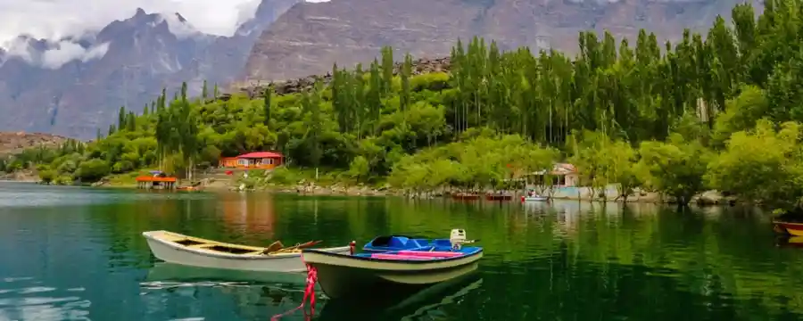
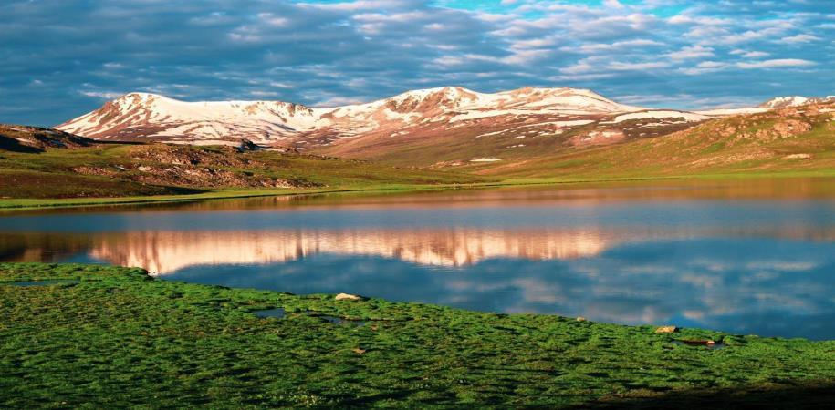
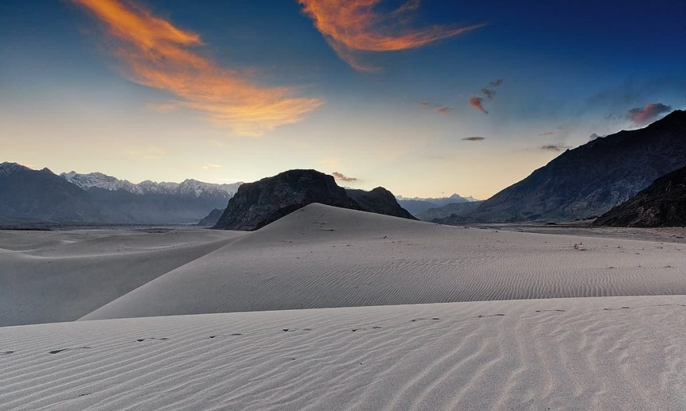
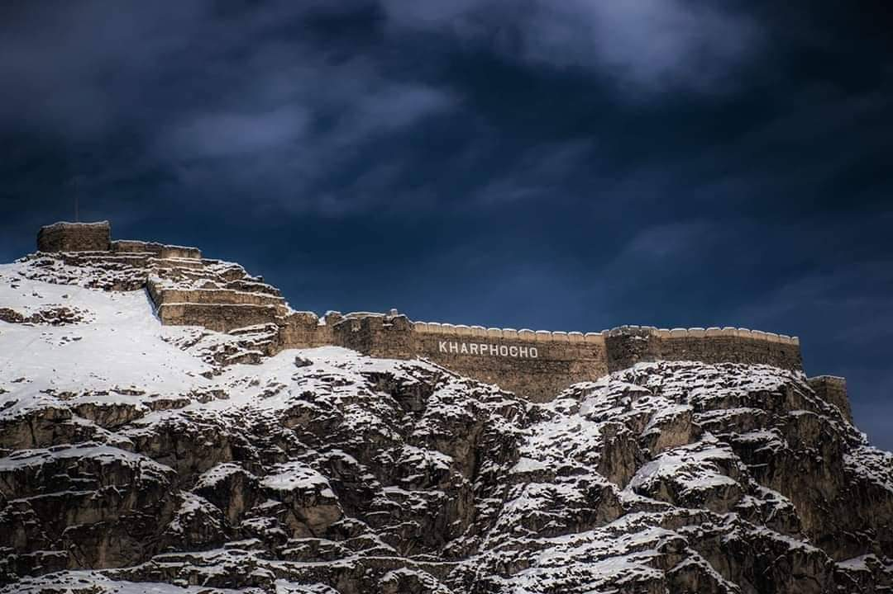

We are a tour company, which has been organizing tours all our
Pakistan specially GB and Azad-Kashmir since 2002 and it is our honour to tell you that there are more than 20,000
happy clients have organized their tour with us.Will you be our next client?Hope so.
We would like to tell you about the some places of GB and
Azad-Kashmir:

Upper Kachura
Lake:
Upper Kachura Lake is of clear water and has
a depth of 70 metres (230 ft). In summer it has a temperature of 15 °C (59 °F).[2] In winter the surface is frozen
solid. The upper Indus River flows nearby at a lower elevation.
The beauty of the Upper Kachura Lake is almost untampered and mostly unexplored by travelers, due to lack of
infrast owing to its rough terrain The area has a rich flora of the Western Himalayan subalpine conifer forests
ecoregion, and also known for its wild apricot - Prunus armeniaca orchards. Recreation activities at Upper Kachura
Lake include hiking, trout fishing, and Himalaya mountaineering.

Deosai
National Park (Roof of Worid):
Deosai National Park (Urdu: دیوسائی باغ ملی) is a high-altitude alpine plain
(plateau) and National Park located between and Skardu Districtand ([Astore District])and (Kharmang District)in
Gilgit-Baltistan, Pakistan.[1]
Deosai Plains are situated at an average elevation of 4,114 metres (13,497 ft) above sea level and considered as
the second highest plateaus in the world.

Sarfaranga Desert (Cold
Desert):
Sarfaranga desert also called Skardu Cold desert located in the Shigar district at
a height of 7,500 feet. On the way to Shigar, one cannot miss it. Nature unfolds itself with a vast variety in
this desert. The desert is surrounded by mountains and the Indus river is flowing nearby.

Kharpocho Fort:
The great fort of Baltistan "Kharpocho" on the vertical cliff of the hill in the middle of Skardu valley stands with hundreds of historical and cultural stories hidden in its chest.This fort is the glorious past of Baltistan
Baltit Fort (Hunza valley):
Baltit fort is a 400 years old fort built by Tibatan massons whome came as
dowery for the princes of Tibet who married the prince of Hunza 400 years ago. It was restored in 1992 and was
converted into a guided museum by the Aga Khan Heritage foundation.
Neelum Valley (Azad-Kashmir):
Neelum valley is one of the beautiful places of Azad Kashmir and it's named after the river which has curves like snake and has blue color. It is also called as the “PARASIDE OF KASHMIR”. There is a contradiction that this valley was named after a precious stone called Neelum.
We also attaching some videos so that you can get more information regarding tourist points:
Eagle View Of Baltistan (Drone-Camera
Video):
JSR Road (Juglote-Skardu Road):
JSR is very important from business, tourism and strategic point of view. It
connects the Baltistan region with the Gilgit region through Karakoram Highway (KKH) and is considered one of the
biggest infrastructural projects witnessed in the history of GB.